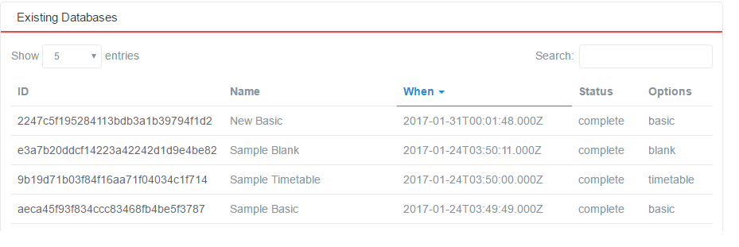
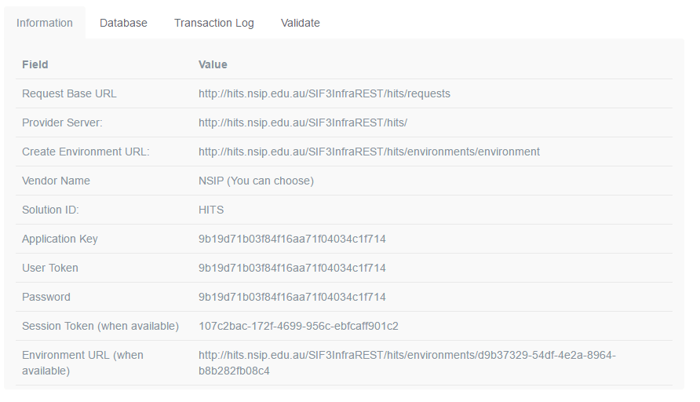

- Developer Help
- Help
Connect SIF3 Java Framework Consumers to HITS
HITS environment
To be able to connect your consumer to HITS you must obtain an account on HITS. Apply on the Welcome page for an account.
Once you have an account, please use your account URL to get to the Welcome page. From the menu on the right select “Developer Tools->Databases” to get your available sandbox databases.
Either you create a new database or you use one that has been created previously. In the lower part of that page you will see something like this:
Figure 1: SIF3 HITS Database View
Select one of the exiting databases and you will get the details page of that database with the SIF Environment information. The second part of that page looks like this:
Figure 2: SIF3 HITS Environment Page
Configure SIF3 Java Framework
To configure the SIF3 Java Framework to connect to the HITS environment listed in previous section you need to do the following steps:
Step 1: Set Solution ID in Environment Template
In your framework you should have a directory where the consumer’s SIF3Environment templates are stored. This would generally be at the following location <installDIR>/src/test/resources/config/environments/consumer/template. There is most likely an environment template called HITS.xml, demo.xml or devLocal.xml. If the HITS.xml doesn’t exist follow the steps below:
- Create a copy of one of these templates in the same directory and name it something like HITS.xml
- Open the newly created HITS.xml file and put the value of the “SIFsolutionId” as seen from Figure 1 into the <solutionId> node.
Your HITS.xml file should look something like this:
<environment xmlns="http://www.sifassociation.org/infrastructure/3.1"> <solutionId>HITS</solutionId> <authenticationMethod>Basic</authenticationMethod> <instanceId/> <userToken/> <consumerName></consumerName> <applicationInfo> <applicationKey></applicationKey> <supportedInfrastructureVersion>3.1</supportedInfrastructureVersion> <dataModelNamespace>http://www.sifassociation.org/au/datamodel/3.4</dataModelNamespace> <transport>REST</transport> <applicationProduct> <vendorName>Systemic Pty Ltd</vendorName> <productName>Test Driver</productName> <productVersion>0.1alpha</productVersion> </applicationProduct> </applicationInfo> </environment>
You can change the values under theapplicationProductnode to any value that is applicable to you. Leave everything else as is.
- Save your HITS.xml file.
Step 2: Configure the consumer’s properties file
The consumer’s property file can be found in the directory <installDIR>/config/consumers. Let’s assume you have a properties file called StudentConsumer.properties. You need to set a few properties in that properties file with the values from Figure 2. Below is the name of each property and what it must be set to:
- env.xml.file.name
Name of xml file created in Step 2 (i.e. HITS.xml) - env.application.key
Value of “Application Key” from Figure 2 - env.pwd
Value of “Password” from Figure 2 - env.userToken
Value of “User Token” from Figure 2 - env.baseURI
Value of “Create Environment URL” from Figure 2 - env.authentication.method
Basic - env.create.conflictIsError\*
false
If the “Session Token” and “Environment URL” from Figure 2 are set then a SIF Environment is already created and you want your consumer to connect to this existing environment. In this case you need to set the following additional properties in the StudentConsumer.properties file:
- env.use.existing
true - env.existing.sessionToken
Value of “Session Token” from Figure 2 - env.existing.environmentURI
Value of “Environment URL” from Figure 2
Step 3: Start your Consumer
After you have applied the configurations in the previous two steps you should be able to start your consumer. Please ensure that your consumer uses the correct properties file (the one you changed in step 2 above). Verify this by looking at the consumer executable and ensure that the ConsumerLoader is initialised with the correct property file (example below):
ConsumerLoader.initialise("StudentConsumer");
Note: You MUST NOT provide the “.properties” file extension!